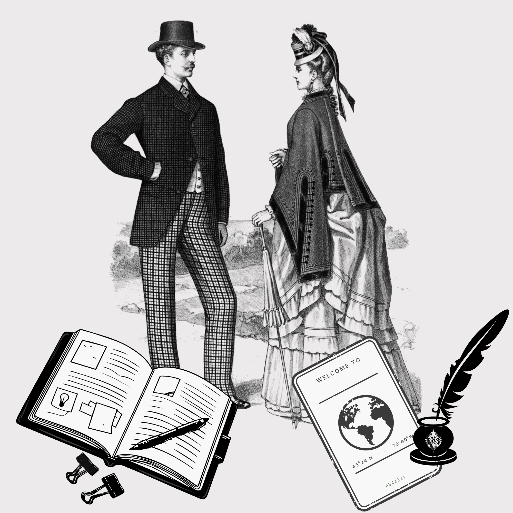

Recursos
Aquí podrás acceder a distintos recursos que te explican partes importantes de la obra. En la sección temas y símbolos dispondrás de análisis de elementos clave, como el fuego y el hielo, cuya interpretación resulta fundamental para entender profundamente Jane Eyre.

En el apartado de personajes podrás consultar una descripción detallada de cada uno de ellos, así como su influencia en la vida de Jane. Además, se incluye un mapa que muestra de forma clara las relaciones entre los distintos personajes.
En el glosario podrás encontrar definiciones de términos que pueden resultar complejos por su escaso uso en la actualidad, así como traducciones de fragmentos relevantes que aparecen en francés.
Por último, la sección de citas recoge algunos de los fragmentos más significativos de la obra, acompañados de breves comentarios que ayudan a contextualizarlos y a profundizar en su significado